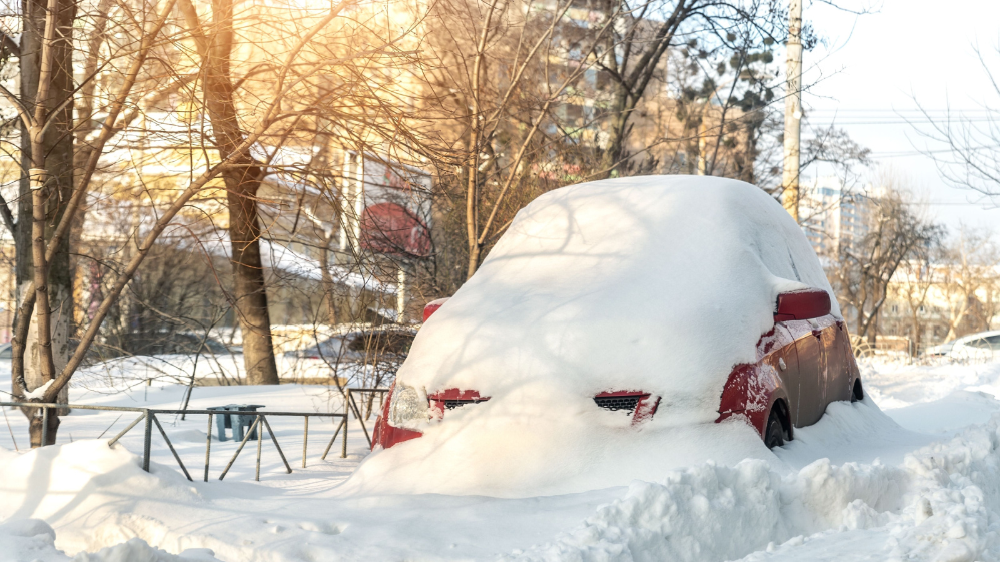

Winter Car Prep
Simple, honest guides to get your car through winter — tires, battery, emergency kit, rust, and the full checklist.

Winter is coming for your car. Be ready before it hits.
Straight answers on winter tires, batteries, emergency kits and rust — no jargon, no upsell, just what works when it's -20°C and the roads are white.
Free winter car tools — built by Winter Car Prep
Three tools, no sign-up, no download, no email. They run right here on the site, in your browser, and store nothing.
Will My Car Start Tomorrow?
Tomorrow's overnight low + your battery's age = your cold-start risk, with what to do tonight.
Use it free →Winter Kit Builder
Answer three questions and get your personal winter emergency kit checklist. Tick it off, print it.
Use it free →Cold Tire Pressure Calculator
See what your PSI will read at -10, -20 and -30°C — before the TPMS light surprises you.
Use it free →Start here
Winter Tires
When to switch, what the symbols mean, and how to store your summers — plus the Cold Tire Pressure Calculator.
Battery Care
Cold kills batteries. Test it before winter does it for you.
Emergency Kit
The 15 things that turn a breakdown into an inconvenience.
Rust Protection
Road salt eats cars from the bottom up. Fight back for under $200.
Full Winter Checklist
One page, every job, in the order to do them. Print it, check it off.
Winter Kit Builder
Answer three questions, get your personal emergency-kit checklist.
Will My Car Start Tomorrow?
Tomorrow's overnight low + your battery's age = your cold-start risk.
Latest articles
- Your Seatbelt Can Push Your Car and Break Your Window — Here's How
The seatbelt secrets most drivers never learn — push a dead car, spot a flood car, break glass to escape. - Xiucheshimei: The TikTok Mechanic Teaching a New Car Trick Every Day
One car trick a day from TikTok's biggest woman mechanic teacher — 5.7 million followers. - Hard to Start in the Cold? Driver Ms. May Shows the DIY Fix
Hard starting + high fuel use, fixed yourself — plus hidden features from a 4.5M-follower driving teacher. - Tonggeshuoche: How to Buy Good Tires Cheap (and the A/C Button Trick)
Buy good tires cheap + the A/C button trick that clears fog — from a 4.7M-follower driving teacher. - 5 Used-Car Checks from Master Shuoche (大师说车)
Five checks before you buy a used car — from the Master, 1.5 million followers. - Snow Shields and Snow Guards: Master Driver's Winter Car Tricks
Snow shields + snow guards for winter — fresh tricks from a 1.4M-follower car teacher.
Why this site exists
Most winter car advice is either a dealership upsell or a forum argument. Winter Car Prep is the middle ground: plain-language guides written for drivers who just want their car to start in January. Every guide tells you what to do, what it costs, and what you can skip.